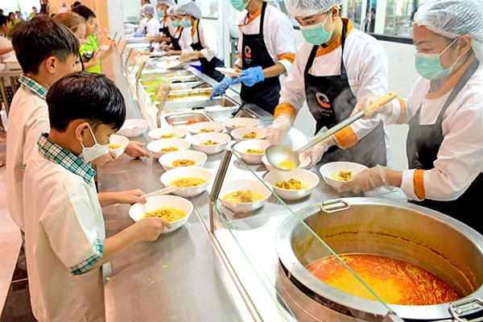
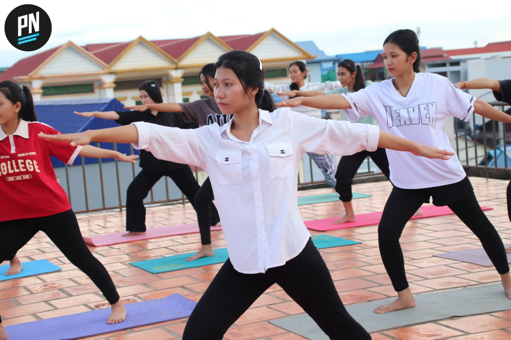
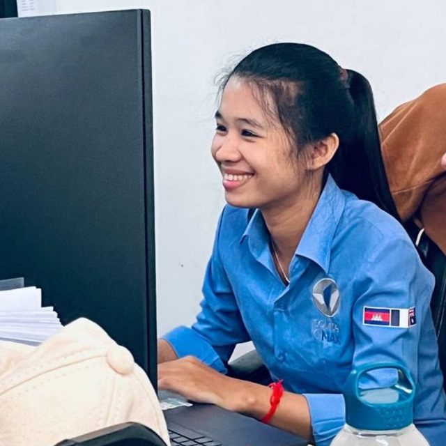
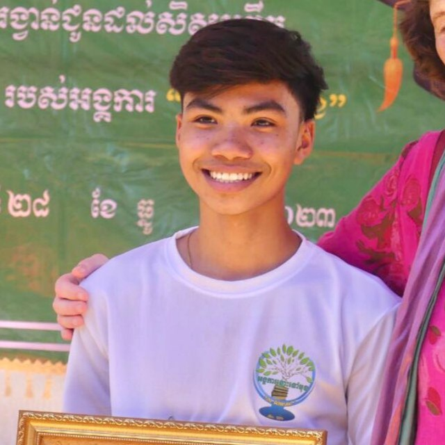

Passerellnumeriques Cambodia
Passerelles Numériques in Cambodia (PNC) offers a 2-year full time training in IT with a major in Software Development, meeting the needs of local companies in the IT industry, for underprivileged Cambodian youths. PNC is registered with the Cambodian Ministry of Education, Youth and Sports. At the end of the training, students receive an Associate Degree in Computer Science with a major in Software Development, as well as a Passerelles Numériques certificate. Throughout their training, students benefit from a comprehensive professional and technical skills training, and strong support for their professional integration. They also participate in extra-curricular and personal development activities.
Our values

Trust
We believe in our students’ ability to grow, and they trust PN to support them in their journey.

Responsibility
We believe in our students’ ability to grow, and they trust PN to support them in their journey.

Solidarithy
We believe in our students’ ability to grow, and they trust PN to support them in their journey.

Respect
We believe in our students’ ability to grow, and they trust PN to support them in their journey.

PNC school also gives food to students three times a day. The canteen is an important facility within the school, designed to provide students, teachers, and staff with a convenient and comfortable place to enjoy meals and refreshments. It usually offers a wide variety of food and beverage options, ranging from healthy local dishes to light snacks and drinks, ensuring that everyone can find something to suit their tastes. In addition to being a food service area, the canteen also acts as a social hub where students can relax, exchange ideas, and build friendships during breaks. For schools that focus on IT or technology-related studies, the canteen often becomes a lively space for students to discuss projects, share knowledge, and collaborate informally outside the classroom. Many canteens also place a strong emphasis on cleanliness, hygiene, and eco-friendly practices, such as waste segregation and reusable utensils, to promote a healthy and sustainable environment for the entire school community.
Our school places a strong emphasis on the importance of health and fitness, which is why regular sports sessions are organized for all students. These sessions are carefully planned by teachers to encourage every student to take part in physical activities that improve their overall well-being. Through sports, students develop strength, stamina, flexibility, and coordination while also learning the value of teamwork, discipline, and fair play. Regular exercise helps reduce stress, boosts concentration, and enhances mental health, which in turn supports better academic performance. By participating in a variety of sports such as running, football, basketball, and other physical exercises, students not only maintain a healthy lifestyle but also gain skills that promote confidence and social interaction. These sports sessions reflect the school’s commitment to nurturing both the physical and mental growth of its students, preparing them for a balanced and healthy future.
Senior's experience

My name is Vun Theavy. I graduated from high school in 2020 and earned a scholarship from Passerelles Numériques Cambodia (PNC) to study Web Development in Phnom Penh, graduating in 2022. I am now continuing my studies at Asia Euro University (AEU) while working in software engineering, where I design and develop applications, solve real-world problems with technology, and build my skills for a successful career in the digital field.
My name is Vun Theavy. I graduated from high school in 2020 and earned a scholarship from Passerelles Numériques Cambodia (PNC) to study Web Development in Phnom Penh, graduating in 2022. I am now continuing my studies at Asia Euro University (AEU) while working in software engineering, where I design and develop applications, solve real-world problems with technology, and build my skills for a successful career in the digital field.

My name is Vun Theavy. I graduated from high school in 2020 and earned a scholarship from Passerelles Numériques Cambodia (PNC) to study Web Development in Phnom Penh, graduating in 2022. I am now continuing my studies at Asia Euro University (AEU) while working in software engineering, where I design and develop applications, solve real-world problems with technology, and build my skills for a successful career in the digital field.